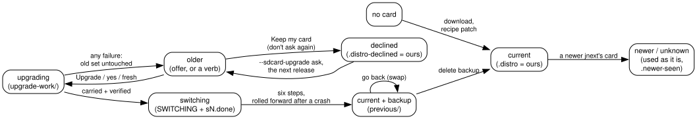

3.8.1 The SD card set¶
The default SD card is not one file but a set kept beside it under ~/.jnext/sdcard/ (or
$JNEXT_CONFIG_DIR/sdcard/). This page describes the set, how a card is compared with the card it
was made from, how an upgrade carries the user's files over, the rescue commands, the image lock, the
start-up error box and the browser's counterpart. The sources are src/core/sdcard_provisioner.cpp
(policy, download), sdcard_upgrade.cpp (carry-over and switch), sdcard_backup.cpp (the backup),
sdcard_carry.cpp (the comparison engine and the rescue verbs), image_lock.cpp and
src/platform/startup_report.cpp.

On-disk layout¶
| File | Content | Written by |
|---|---|---|
cspect-next-1gb-fixed.img |
the user's card | the provisioner, then the guest |
cspect-next-1gb.img |
the original distribution image the card was made from | the provisioner |
<card>.distro, <raw>.distro |
the distribution (zip name) of each; none means 24.11 | the provisioner |
<card>.recipe |
the recipe number that made the card; none means 1 | the provisioner |
<raw>.sha256 |
the original's SHA-256 | the provisioner |
<card>.distro-declined |
the release whose offer was turned down for good | the offer, --sdcard-upgrade never |
<card>.newer-seen |
the newer distribution a notice was shown for | the provisioner |
overlays.list |
absolute paths of the --sdcard-writes files used with the default card |
bind_card_writes |
previous/ |
the backup: the old card, raw, sidecars; overlays/ with a LIST of tag and path; upgrade-report.txt |
the upgrade, go back |
upgrade-work/ |
scratch: the new raw and card, old-as-made.img, new-as-made.img, report.txt, SWITCHING and the sN.done marks |
the upgrade |
go-back-work/ |
the swap's scratch, SWAPPING and the gN.done marks |
go back |
<state dir>/locks/<hash>.lock |
the image lock files | image_lock.cpp |
test-suite/ |
the harness's own card; owned by the test suites, never by a user | the harness |
Identifying a version¶
A distribution is the file name of its zip. distribution_of_url takes it from the address,
backup::compare_distributions orders two (the numbers of sn-emulator-<N>(.<N>)*<letter>?.zip
component by component, then the letter; a name it cannot parse is unknown), and the recipe number
orders cards made by different recipes. A card of a newer distribution, an unknown one or a newer
recipe is used as it is: no offer, a warning in the log and one notice for each distribution
(<card>.newer-seen). A card with no sidecars is a 24.11 card at recipe 1.
The comparison¶
carry::pristine_base_ok says whether a card can be compared with the card as it was made: the
original exists and matches its .sha256, both .distro agree, the recipe is known and, for recipe 3,
the volume serial is the one the original's hash gives. rebuild_as_made copies the original (sparse)
and runs the recipe (patch_image_for_recipe) to rebuild the card as it was made, exactly, FatFs's own
metadata included. Cards are read through ChaN FatFs on two volumes at once (FF_VOLUMES 2: drive 0
and drive 1; a read-only attach never writes), or, for an under-clustered distribution image FatFs
refuses, through the hand-rolled reader (open_tree_lenient, always on drive 1).
Hashing the 1 GB original takes about half a second, so pristine_base_ok skips the hash while
<original>.verified vouches for it. That record is one line, <digest> <size> <mtime> and a newline:
the digest 64 lowercase hex digits, the size a decimal uint64, the mtime the last_write_time ticks of
the original as a decimal int64 (it may be negative). The record counts only when it is exactly that
(a missing final newline, other case, a wrong length, an overflow or trailing text make it void) and its
digest is the .sha256 sidecar's digest and its size and mtime are the original's now. A void record
means a hash; a match writes the record from the size and mtime read before the hash, so an original
changed during the hash voids it. A write that fails is ignored (the next check hashes again). The limit,
accepted on purpose: an in-place rewrite of the original that keeps its size and its mtime (a restored
mtime, or a change inside the filesystem's timestamp resolution) is not noticed. pristine_hash_count
counts the hashes, for tests. Only the Upgrade path asks for the check: the File menu and Delete call
card_set_status with check_pristine false.
"Changed" means a different type, size, content or R/H/S attribute; not the archive bit, a date, the 8.3
name, a case-only rename or the volume label. There are two layers: the direct one (the card against the
rebuilt original) and, for each writes file, the overlay one (the card seen through the file against the
card). Two properties of FAT shape the walk: a name that ends in a space or a dot cannot be addressed
through FatFs (Entry::unaddressable: listed, never compared, carried or exported), and an 8.3 name
that a long name's generated short name would collide with must be written first (write_order).
The carry-over¶
decide takes the user's changes and what the distribution changed at the same paths (the new card as
made against the rebuilt original) and decides per path: a deletion is never carried (it is listed when
the new card has the path); a path the distribution also changed, or holds with the other type, or whose
parent is a file there, is the distribution's (listed as replaced); the rest is carried. apply_carry
is the low-level writer (not add_to_image: it keeps attributes and dates, and writes names exactly):
space is checked before writing, parents are made as needed, a failure removes what it created.
verify_carry then checks that the carried paths equal their sources and that nothing else differs
from the new card as made (the parents the carry made count as carried).
Overlays are rebuilt as FILE.new, bound to the new card's final size and modification time (the new
card is not written after that), by writing the overlay layer through a journal over the new card; the
esxDOS stand-in's kept-file record is copied. Writes files are read for the list (overlays.list,
usable_overlays) from their headers only: binding a file registers it as the card's write target and
compacts it, which a start that merely makes an offer must not do.
The switch, atomicity and the backup¶
Everything is made inside upgrade-work/; the old card, raw and overlays are only read until the
switch. SWITCHING (written under another name and renamed) holds the plan, and six idempotent steps
follow, each marked by sN.done: the old set and a copy of the overlays into previous.new/; the new
raw with its sidecars (a card is never in place without the raw it was made from); the new card with
its sidecars; each FILE.new over its FILE (a fresh start removes the file instead); the old
previous/ removed and previous.new/ renamed to it; the report copied and upgrade-work/ removed.
upgrade::recover runs at the start of every provisioning, under the lock: with SWITCHING it rolls
forward, without it it deletes the scratch. Before the first step any failure removes the scratch and
the run goes on with the old card. backup::go_back is the same shape (four steps in go-back-work/) and
swaps the two sets; delete_backup removes previous/ only. Before step 1 every writes file the backup
holds is checked against the path it is to be restored to: a missing folder is made, and a path nothing can
be written to refuses the go back with the set exactly as it was (exit 3 and the box are then true).
After step 1 the swap must always be able to finish: a restore target that became unwritable only keeps
the file's copy in the new previous/overlays/ under an unrestored- name and logs where it is. The
last upgrade's upgrade-report.txt stays with the set it describes. In the Qt window the actions eject
slot 0 through the live card change, do their work outside the frame tick, re-bind the session's
writes file over the new card, insert the card again and hard-reset the machine (requested in the tick that
services the insert, so no frame runs on the new card first; the session's writes file is detached from the
card while the work runs, and only the session's own file is bound again, and only when it belongs to the card
that is mounted). A failed or no-op action puts the original card back with its writes file and says why. The machine is not
paused: the change is serviced on the frame tick, and a paused session does not tick. The flow is
driven by sdcard_menu_test (SDMENU-09 to 11).
The rescue commands and CHANGES.txt¶
--sdcard-writes-flatten OUT lays the journal over a copy of the card sector by sector.
--sdcard-export-changes DIR compares the card as the machine sees it with a base, in this order:
the card as made (the default card with a pristine base), --sdcard-export-base, the card itself
when there is a journal; with none it refuses. Files go to DIR under escaped host names
(%XX: bytes outside printable ASCII, %, characters a host refuses, a trailing dot or space, a
device name, and a root file named like the list itself). --sdcard-import-changes DIR goes through
the file-add path with two extensions (restoring R/H/S, replacing a read-only file): everything is
validated before the image is opened, and a failure rolls back. Import is user-wins, the upgrade is
distribution-wins.
--sdcard-file-extract PATH is the read-only counterpart that is not limited to the first FAT32-LBA
partition: it mounts the volume the firmware would (any FAT12/16/32 card, partitioned or not) read-only
through FatFs, with the writes file laid over it, and copies one file or directory into the current
directory (see "Taking files off the card" in 3.8). It shares escape_name
with the export.
CHANGES.txt is jnext-changes 1 on the first line, then # card:, # writes:, # base: and
# made: YYYY-MM-DD HH:MM:SS comments (ignored on import), then one line per entry of five
TAB-separated fields: the kind (A added file, C changed file, D added directory, R removed),
the attributes (- or letters from R, H, S in that order), the size, the card path and the
host path relative to DIR (- for D and R). Names are %XX-escaped, lines are sorted by
card path, CR is accepted. format_changes and parse_changes are the one writer and reader; the
parser refuses a wrong magic or version, a field count other than five, an unknown kind, a size that
is not a number, a relative card path, and a host path with .. or a leading /.
The image lock¶
Two jnexts on one card or writes file would each cache what the other writes. ImageLock takes a
lock on a file in <state dir>/locks/ named by a hash of the canonical path (not an inode, so a
replaced card keeps its lock): flock on POSIX, LockFileEx on Windows, a no-op in the browser.
sd_locks keeps one holder per slot, disabled until main enables it (the unit suites build many
emulators in one process). The default location's card and the command line's writes file are locked
from the first moment of a start, before recovery, the offer and the upgrade, and the listed overlays
an upgrade would move are locked too; a held set gets only the lock message. Live card changes take the
new card's lock before unmounting the old one. Hard links count as separate cards (the harness uses
one for each parallel row).
The lock file's body is labelled lines, each ending in a newline: pid:, image: (writes: for a
writes lock) with the canonical path, and, only while the process serves ZRCP on a socket,
zrcp_listening_address: and zrcp_listening_port:. DebugServers::start() publishes the address and
the BOUND port (a --zrcp-port 0 run has no other) through sd_locks::set_zrcp_endpoint(), and its
destructor withdraws them. The endpoint is process-wide state: it rewrites every lock the two slots hold
(ImageLock::refresh_body(): pwrite then ftruncate, or the Windows file pointer and
SetEndOfFile; the lock byte lies far past the content, so the body stays readable by the process that
is refused), and ImageLock::acquire() writes it into every lock taken afterwards, so a live card
change carries it too. A refusal fills a LockHolder (pid and endpoint) through parse_lock_body(), the
one reader of the format. It is strict and bounded because any process of the same user, an older jnext or
a rewrite in flight can be the writer: at most 4 KiB, complete lines only (a last line with no newline is
dropped, so a rewrite caught half-way never yields a truncated port), a duplicated label dropped, a port
of decimal digits in 1..65535, an address that is a numeric IP, and anything doubtful is "no endpoint".
A first line of digits alone is the older unlabelled form: a pid and no endpoint. The holder of the
default card or of a named one is also found by this lock when --sdcard-file-add is refused it:
platform/sdcard_forward.* connects to the recorded server (see 3.8, "A copy asked for by another
process"). A lock directory under another JNEXT_CONFIG_DIR or another user is another lock: such a
process is not refused and so cannot forward.
The suites' own card¶
The suites never read or write ~/.jnext/sdcard's user files: sd_test_state_dir names the
harness's own master under test-suite/, test_sd_image.h finds it for the unit suites, and
lint-user-card fails any test or tool that names the user's card. Real SD images are never
committed or posted.
Start-up errors in a window¶
startup_report::report writes the exact bytes fprintf(stderr, ...) would and keeps the text; a
logger tap keeps warnings and errors. main wraps run_main: when a windowed, attended run (no
--headless, no --delayed-automatic-exit, not a terminal command, not a browser) fails before its
loop started, and no dialog of its own was shown, the text goes into a Qt or SDL box (on the offscreen
and dummy platforms into one debug line). Test rows run with no DISPLAY or WAYLAND_DISPLAY. startup_report_test reads src/main.cpp and fails when run_main holds a bare fprintf(stderr or std::cerr that is not marked as a terminal verb, so a new fatal refusal cannot bypass report().
The browser¶
jnext-card-writes is at version 2: journals holds the saves, journal-meta tags each record with
{page, cardSha256, distribution, defaultCard}. On a mount with keepWrites on the default card,
records of the same page whose tag says another card, defaultCard: true and another distribution are
deleted from both stores before the machine starts, and onNotice('card-writes-reset', message) is
called. Records without a tag, a page-supplied card's records and other pages' records stay.
(WBW-18 to WBW-22.)
Test rows¶
sdcard_carry_test (SDCMP, SDCARRY, SDFLAT, SDEXP, SDIMP), sdcard_file_extract_test and sdcard_file_extract_posix_test (SDFX), sdcard_upgrade_test (SDUPG), sdcard_backup_test
(SDBAK, SDMENU-01..06), sdcard_menu_test (SDMENU-07..11), sdcard_provisioner_test (PROV-DIST, SDNEW),
image_lock_*_test (SDLOCK), startup_report_test (STARTERR), the regression rows
sdcard-upgrade-carry-func, sdcard-upgrade-real-func, sdcard-backup-func, sdcard-rescue-func,
sdcard-file-extract-func, sdcard-lock-func, sdcard-no-default-card-func and startup-error-dialog-func, and the browser rows
WBW-18 to WBW-22.